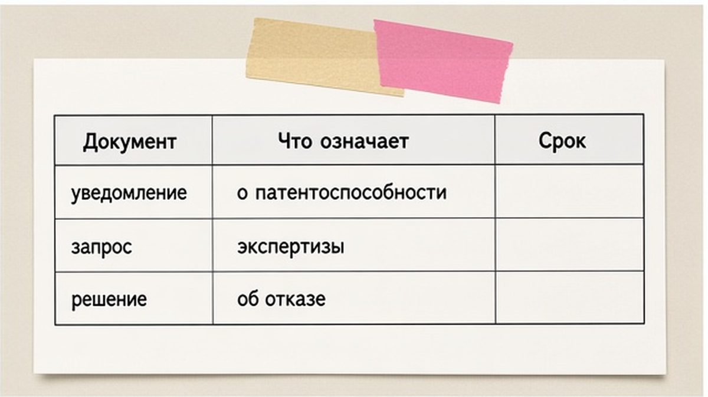
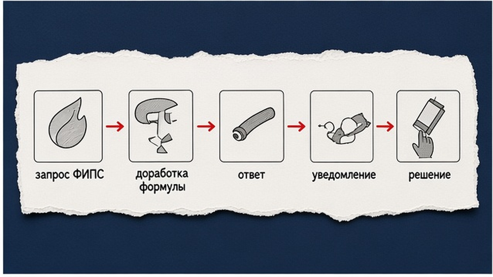

В обзоре, влоге или рекламе в кадре оказался чужой логотип - правообладатель может увидеть это как использование знака без согласия, особенно на обложке. Короткий ответ: название и эмблему в видео можно показывать, если знак нужен для правдивого описания товара или события, вы не выдаёте себя за этот бренд и не делаете чужой знак главным рекламным акцентом; для платной рекламы и мерча безопаснее письменная лицензия. Ниже чек-лист по ГК РФ - вы оцените монтаж до публикации.
TL;DR / Быстрый инсайт: Товарный знак в ролике - это не "картинка из интернета", а чужое исключительное право (п. 2 ст. 1484: в том числе в рекламе и в сети). Информационный обзор, новость или сравнение без вводящей в заблуждение связи с правообладателем обычно ближе к допустимому использованию, чем баннер "мы официальные партнёры", если партнёрства нет. Логотип как объект дизайна дополнительно попадает под авторское право - цитирование ограничено ст. 1274. При жалобе сначала снимите спорный фрагмент, зафиксируйте переписку; компенсация по ст. 1515 с 04.01.2026 до 10 млн руб. За вводящую в заблуждение рекламу с чужим знаком возможна ответственность по ст. 14.33 КоАП РФ.
Запросы "можно ли использовать логотипы компаний в видео" и "законность демонстрации эмблем авто в роликах" сводятся к одному: зачем знак в кадре и создаёт ли ролик путаницу с правообладателем. Нормы разобраны со ссылками на ст. 1484, ст. 1274 и ст. 1252 ГК РФ на 19.10.2026. Материал для блогеров и малого бизнеса; не заменяет договор с правообладателем и не учитывает иностранное право без отдельной проверки.

Закон смотрит на смысл кадра: эмблема на машине в тест-драйве - описание вещи; крупный чужой знак на заставке с обещанием "как у X" без договора - риск смешения по п. 3 ст. 1484.
Делайте: в сценарии одной фразой опишите, зачем нужен знак (модель авто, цена конкурента, факт новости). Не делайте: ставить чужой логотип на превью как свой бренд или обещать статус "официальный", "партнёр", "дилер" без документов.
Логотип часто двойной объект: товарный знак (п. 2 ст. 1484: реклама, интернет) и дизайн (ст. 1229). Цитирование в обзоре - ст. 1274, но не полноэкранная заставка без комментария.
| Ситуация в ролике | Товарный знак (ст. 1484) | Авторское право (ст. 1274) | Практический вывод |
|---|---|---|---|
| Обзор авто, эмблема на машине в кадре | Обычно как описание товара, не замена своей маркировки | Краткий фрагмент в контексте обзора | Снимайте общий план, не делайте эмблему обложкой |
| Сравнение двух сервисов, логотипы на экране | Риск смешения, если однородные услуги и акцент на чужом знаке | Допустимо при объективном сравнении и минимальном объёме | Нейтральная подача, без оскорблений и псевдо-официальности |
| Реклама своего продукта с чужим знаком | Высокий риск без лицензии | Нужно согласие на воспроизведение дизайна | Только договор или убрать знак из кадра |
Делайте: для коммерческого ролика заранее спросите правообладателя или используйте пресс-кит бренда, если он публично разрешён. Не делайте: скачивать логотип с поиска и вставлять в заставку "для красоты".

В обзоре эмблема на купленной или арендованной машине - часть вещи; на мерче и в рекламе вашего сервиса - уже знак как реклама. Подлинный товар в обороте (ст. 1487) не спасает самодельный принт с тем же знаком.
Workflow монтажа: сценарий и цель кадра → классификация (новость / обзор / реклама) → длительность и размер знака → подпись и дисклеймер → при сомнении размытие или вырезка → архив исходников и переписки с брендом
Делайте: в титрах писать "названия и логотипы принадлежат их правообладателям", если это правда, и не противоречит содержанию. Не делайте: считать, что дисклеймер заменяет лицензию в платной рекламе.
Делайте: хранить переписку и пресс-материалы бренда. Не делайте: публиковать до проверки, если бренд жёстко защищает ИС.
| Критерий | Оставить знак в кадре | Размыть / заменить | Запросить лицензию |
|---|---|---|---|
| Некоммерческий обзор чужого товара | Часто да, при коротком плане | Если бренд просил убрать или знак на обложке | Редко нужна |
| Реклама ваших услуг | Только с разрешением | Безопасный вариант по умолчанию | Для интеграций и кобрендинга |
| Новость о компании | Да, в объёме цитаты (ст. 1274) | Если знак не относится к сути новости | Для эксклюзивных материалов |
Итоговый вердикт: для личного обзора авто или новости о рынке эмблема в кадре обычно терпима, если вы не притворяетесь брендом. Для платной рекламы и мерча без договора размытие или лицензия почти всегда дешевле спора.
Жалоба может вести к требованию снять ролик и к компенсации по ст. 1252 и п. 4 ст. 1515 (с 04.01.2026 от 10 000 до 10 000 000 руб.). Вводящая в заблуждение реклама с чужим знаком - зона ст. 14.33 КоАП РФ.
Делайте: при первом письме снять ролик с публичного доступа или убрать спорный фрагмент, сохранить метрики до и после, ответить без признания вины, если позиция спорная. Не делайте: игнорировать уведомление платформы о strike - повтор может ударить по всему каналу.
Дополнительно: при монтаже архивируйте лицензии на музыку и стоковые кадры - спор по звуку и по картинке приходит одинаково неожиданно. Если снимаете на территории дилера, устное разрешение администратора не заменяет письмо бренда на использование знака в рекламе вашего сервиса. Сохраняйте дату съёмки и GPS-локацию в метаданных - это помогает доказать репортажный контекст.
Если вы строите канал вокруг бренда, зарегистрируйте своё обозначение, чтобы другие не использовали его как свое: ориентир - регистрация товарного знака и защита в сети. По спорному монтажу до публикации можно задать вопрос юристам Лирейт: контакты, Telegram @lireate_patent, WhatsApp +7 960 048-49-57 или звонок +7 960 048-49-57.
Материал проверен: эксперт Елена Ковалева (Главный эксперт по SEO/GEO).
Достоверность данных: нормы ст. 1484, ст. 1252, ст. 1515, ст. 1274, ст. 1229 ГК РФ и ст. 14.33 КоАП РФ сверены с КонсультантПлюс на 19.10.2026; ключевые запросы по теме логотипов в видео верифицированы по данным Яндекс Вордстат на июнь 2026 года.
Да, если знак нужен для правдивого описания товара, услуги или события, вы не выдаёте себя за правообладателя и не используете логотип как главный рекламный элемент без разрешения. Для платных интеграций запросите письменное согласие.
Обычно да, когда эмблема на реальном автомобиле в кадре обзора или тест-драйва, а не на вашем мерче и не на обложке как ваш бренд. Сократите время крупного плана и избегайте слов "официальный дилер" без договора.
Это полезная оговорка, но она не заменяет лицензию в коммерческой рекламе и не отменяет риск смешения по ст. 1484, если зритель думает, что вы связаны с брендом.
Для случайного фона в некоммерческом влоге размытие часто не обязательно, но снижает споры. Для рекламы своих услуг размытие или вырезка безопаснее, чем крупный чужой знак рядом с вашим предложением.
Снимите или отредактируйте спорный фрагмент, сохраните копии переписки и метрик, ответьте по сути. При требовании денег сверьте основания со ст. 1252 и п. 4 ст. 1515 и при необходимости обратитесь к юристу до признания вины.
Если ролик вводит в заблуждение относительно партнёрства или происхождения товара, возможна ответственность по ст. 14.33 КоАП РФ.